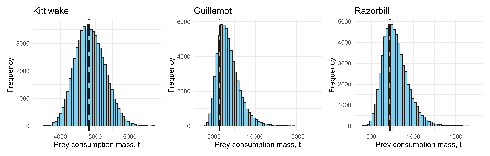
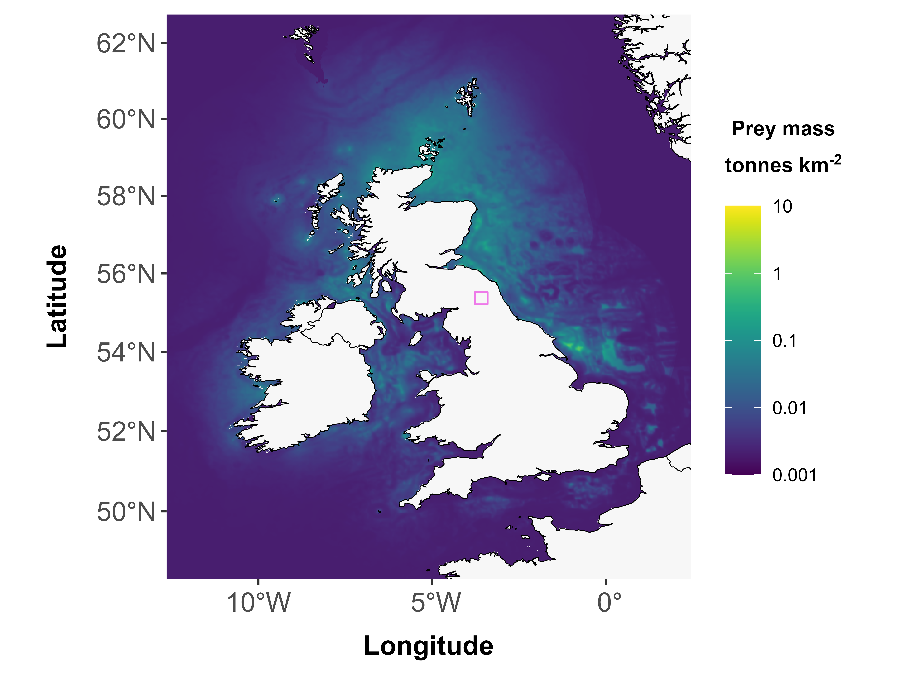
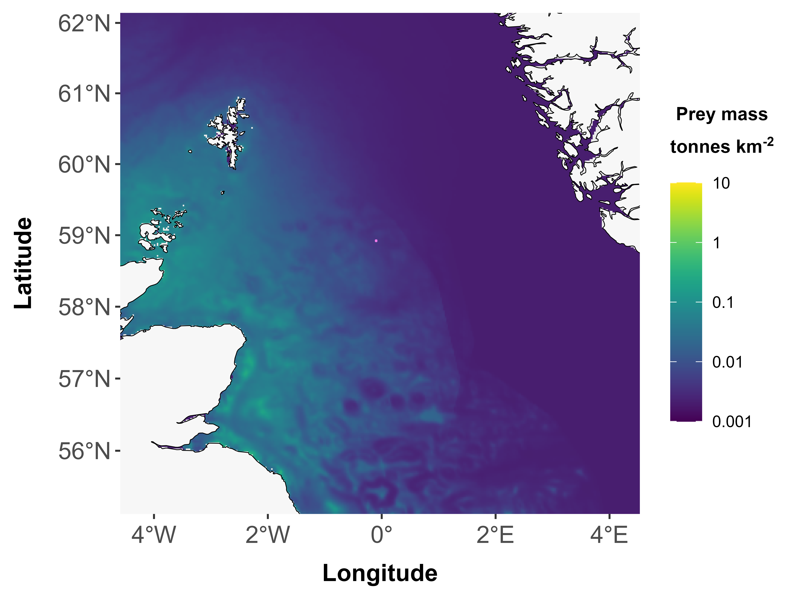
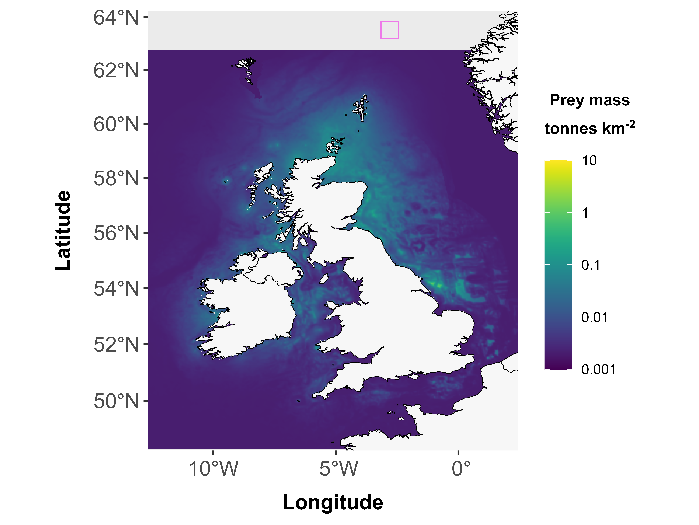

Install spmapper
You can install spmapper directly from within R (recommended) with the below code, or via download from the github repository, linked via the “Download spmapper” box on the homepage of this website.
# Install spmapper from within R
library(devtools)
devtools::install_github("NERC-CEH/spmapper-pkg")
## If you have downloaded the package files directly from the github repository, you will first need to install the package by modifying the below example code
# install.packages("C:/Users/myusername/Downloads/spmapper-pkg_[0.1.0].tar.gz", repos = NULL, type = "source") # with the correct file path and version name etc
# load the package
library(spmapper) Load packages and functions
Load packages needed for tool functions. Check you have all necessary packages installed.
# load required packages
library(spmapper)
library(terra)
library(sf)
library(knitr)
library(rnaturalearth)
library(viridis)
library(ggplot2)
library(patchwork)
## Define tool directory path - this is important to source the package functions, and for those functions to locate the input data!
tooldir <- system.file("extdata", package = "spmapper") # automatically find and define your file path - but do check the path is correct
# tooldir <- file.path(".../spmapper") # alternatively, modify here to your package files directory if you have installed the package elsewhere
# Load package functions
invisible(system.file("R", "functions_preymodel.R", package = "spmapper"))
invisible(system.file("R", "functions_spmapper.R", package = "spmapper"))
invisible(system.file("R", "functions_fpudoverlap.R", package = "spmapper"))
invisible(system.file("R", "functions_spmapplot.R", package = "spmapper"))Worked example
Specify user polygon(s)
Users can specify multiple polygon/multipolygon objects and apply the rest of the example code to compare prey consumption across areas. spmapper functions are capable of handling multipolygon objects.
Users are reminded to define the Coordinate Reference System (CRS) of their loaded shapefiles. spmapper reprojects user polygons to align to the prey consumption maps. spmapper includes a function to plot prey consumption maps with the user polygons overlaid (see below).
# Specify shapefile/s
fppolys <- sf::st_read(file.path()) # Add your filepath/s here.
## Users must define the CRS of their loaded shapefile for spmapper to function!
fppolys <- st_crs([...]) # define source file CRSRun primary function spmapper() - produces prey consumption maps for chosen species and optionally extracts quantities within user-specified polygons, if provided.
Specify species of interest with “spname =”, optional user-supplied polygons with “fppolys =”, and the directory to tool data with “tooldir =” (defined earlier under ‘Load packages and functions’). The object returned (e.g. out_kitt) is a list object of the various inputs, quantities, and output prey consumption maps.
out_kitt <- spmapper(spname = "Kittiwake", fppolys = fppolys, tooldir = tooldir)## |---------|---------|---------|---------|=========================================
out_cogu <- spmapper(spname = "Guillemot", fppolys = fppolys, tooldir = tooldir)## |---------|---------|---------|---------|=========================================
out_razo <- spmapper(spname = "Razorbill", fppolys = fppolys, tooldir = tooldir)## |---------|---------|---------|---------|========================================= Visualise prey consumption maps with optional input polygons overlaid, using spmapplot()
spmapplot() takes two arguments, the first is a prey consumption map (raster, generated by spmapper(), contained in list outputs in the form out_kitt$prey_cons_map), the second optional argument is a polygon object (e.g. the user’s polygons, fppolys)
# Plot all species prey consumption maps
(spmapplot(out_kitt$prey_cons_map, fppolys) + ggtitle("Kittiwake")) +
(spmapplot(out_cogu$prey_cons_map, fppolys) + ggtitle("Guillemot")) +
(spmapplot(out_razo$prey_cons_map, fppolys) + ggtitle("Razorbill")) +
patchwork::plot_layout(ncol = 1)
# Or plot a single species map, e.g. Razorbill
spmapplot(out_razo$prey_cons_map, fppolys) + ggtitle("Razorbill")Visualise prey mass estimates
The following code plots the distribution of prey mass estimates produced by spmapper(), and annotates the baseline estimate with a dashed line.
blki_p <- ggplot(data.frame(out_kitt$allbirds_prey_sim), aes(out_kitt$allbirds_prey_sim/1000)) +
geom_histogram(bins = 50, color = "gray10", fill = "skyblue") +
geom_vline(xintercept = out_kitt$allbirds_prey_est/1000, color = "gray10", linetype = "longdash", linewidth = 1.1) +
labs(x = "Prey consumption mass, t", y = "Frequency", title = "Kittiwake") +
theme_minimal()
cogu_p <- ggplot(data.frame(out_cogu$allbirds_prey_sim), aes(out_cogu$allbirds_prey_sim/1000)) +
geom_histogram(bins = 50, color = "gray10", fill = "skyblue") +
geom_vline(xintercept = out_cogu$allbirds_prey_est/1000, color = "gray10", linetype = "longdash", linewidth = 1.1) +
labs(x = "Prey consumption mass, t", y = "Frequency", title = "Guillemot") +
theme_minimal()
razo_p <- ggplot(data.frame(out_razo$allbirds_prey_sim), aes(out_razo$allbirds_prey_sim/1000)) +
geom_histogram(bins = 50, color = "gray10", fill = "skyblue") +
geom_vline(xintercept = out_razo$allbirds_prey_est/1000, color = "gray10", linetype = "longdash", linewidth = 1.1) +
labs(x = "Prey consumption mass, t", y = "Frequency", title = "Razorbill") +
theme_minimal()
(blki_p + cogu_p + razo_p) 
View output tables
The folowing code produces a table of prey mass consumption (kg) estimates for each species. Estimate refers to the baseline estimate, CI_Lower is the lower confidence interval (2.5%) and CI_Upper is the upper confidence interval (97.5%).
tab_kitt <- data.frame(
Species = "Kittiwake",
Estimate = out_kitt$allbirds_prey_est,
CI_Lower = as.numeric(quantile(out_kitt$allbirds_prey_sim, 0.025)),
CI_Upper = as.numeric(quantile(out_kitt$allbirds_prey_sim, 0.975)))
tab_cogu <- data.frame(
Species = "Guillemot",
Estimate = out_cogu$allbirds_prey_est,
CI_Lower = as.numeric(quantile(out_cogu$allbirds_prey_sim, 0.025)),
CI_Upper = as.numeric(quantile(out_cogu$allbirds_prey_sim, 0.975)))
tab_razo <- data.frame(
Species = "Razorbill",
Estimate = out_razo$allbirds_prey_est,
CI_Lower = as.numeric(quantile(out_razo$allbirds_prey_sim, 0.025)),
CI_Upper = as.numeric(quantile(out_razo$allbirds_prey_sim, 0.975)))
kable(rbind(tab_kitt, tab_cogu, tab_razo), digits = 2, caption = "Prey consumption mass, kg")| Species | Estimate | CI_Lower | CI_Upper |
|---|---|---|---|
| Kittiwake | 4819894.3 | 4085681.9 | 5718792 |
| Guillemot | 5681001.3 | 4775665.0 | 9955648 |
| Razorbill | 718604.3 | 553496.9 | 1122483 |
View polygon extraction results
The following code produces a table of the results of the spatial extraction of prey consumption within polygons. fp_percent is the percentage of total prey consumption, fp_Estimate is the baseline prey mass (kg), fp_CI_Lower is the lower confidence interval for prey mass (kg, 2.5%), and fp_CI_Upper is the upper confidence interval for prey mass (kg, 97.5%) contained within the polygons.
fp_tab_kitt <- data.frame(
Species = "Kittiwake",
fp_percent = round(out_kitt$fp_ud_overlap * 100, 4), # % prey consumption in footprint/s, 4 d.p.
fp_Estimate = out_kitt$allbirds_prey_fp_est,
fp_CI_Lower = as.numeric(quantile(out_kitt$allbirds_prey_fp_sim, 0.025)), # 2.5%
fp_CI_Upper = as.numeric(quantile(out_kitt$allbirds_prey_fp_sim, 0.975))) # 97.5%
fp_tab_cogu <- data.frame(
Species = "Guillemot",
fp_percent = round(out_cogu$fp_ud_overlap * 100, 4), # % prey consumption in footprint/s, 4 d.p.
fp_Estimate = out_cogu$allbirds_prey_fp_est,
fp_CI_Lower = as.numeric(quantile(out_cogu$allbirds_prey_fp_sim, 0.025)), # 2.5%
fp_CI_Upper = as.numeric(quantile(out_cogu$allbirds_prey_fp_sim, 0.975))) # 97.5%
fp_tab_razo <- data.frame(
Species = "Razorbill",
fp_percent = round(out_razo$fp_ud_overlap * 100, 4), # % prey consumption in footprint/s, 4 d.p.
fp_Estimate = out_razo$allbirds_prey_fp_est,
fp_CI_Lower = as.numeric(quantile(out_razo$allbirds_prey_fp_sim, 0.025)), # 2.5%
fp_CI_Upper = as.numeric(quantile(out_razo$allbirds_prey_fp_sim, 0.975))) # 97.5%
kable(rbind(fp_tab_kitt, fp_tab_cogu, fp_tab_razo), digits=1, caption = "Polygon extraction results")| Species | fp_percent | fp_Estimate | fp_CI_Lower | fp_CI_Upper |
|---|---|---|---|---|
| Kittiwake | 7.0 | 336915.8 | 285593.6 | 399749.7 |
| Guillemot | 4.3 | 243174.5 | 204421.7 | 426150.2 |
| Razorbill | 3.2 | 23257.7 | 17914.0 | 36329.3 |
Mis-specification of inputs
spmapper performs checks for potential input specification errors. The following examples illustrate the error messages produced under cases of mis-specification.
Incorrect species name
spmapper explicitly checks whether the provided species names are valid (including capitalisation).
spmapper(spname = "kittiwake", fppolys = fppolys, tooldir = tooldir)## Error in spmapper(spname = "kittiwake", fppolys = fppolys, tooldir = tooldir): Invalid species name: must be 'Kittiwake', 'Guillemot' or 'Razorbill'!Incorrect path to tool
spmapper does not currently explicitly check if the path provided is correct/valid, but may yield sensible error messages if an incorrect path is specified.
spmapper(spname = "Kittiwake", fppolys = fppolys, tooldir = "test")## Warning in file(file, "rt"): cannot open file 'test/fame_population_ests.csv':
## No such file or directory## Error in file(file, "rt"): cannot open the connectionValidity of footprints
The tool does not check directly for the validity of the polygons provided, but does run three checks for consistency between polygons and the prey consumption maps. spmapplot() can be used to visualise polygons overlaid on the prey consumption maps.
1. Footprints on land (or in other areas of map without values)

## |---------|---------|---------|---------|========================================= ## Error in fpudoverlap(fppolys = fppolys, udmap = udmap): Zero overlap between footprint and any grid cell2. Footprints smaller than one grid cell

## Error in fpudoverlap(fppolys = fppolys, udmap = udmap): Size of footprint is smaller than the size of a single grid cell - tool would not produce meaningful results in this situation3. Footprints outside extent of prey consumption maps
Note: this may be footprints on land, but it could also be footprints in areas that are within extent but in areas that weren’t included in the original modelling in Wakefield et al. (2017).

## Error in fpudoverlap(fppolys = fppolys, udmap = udmap): Polygon lies partly or completely outside area of selected grid!